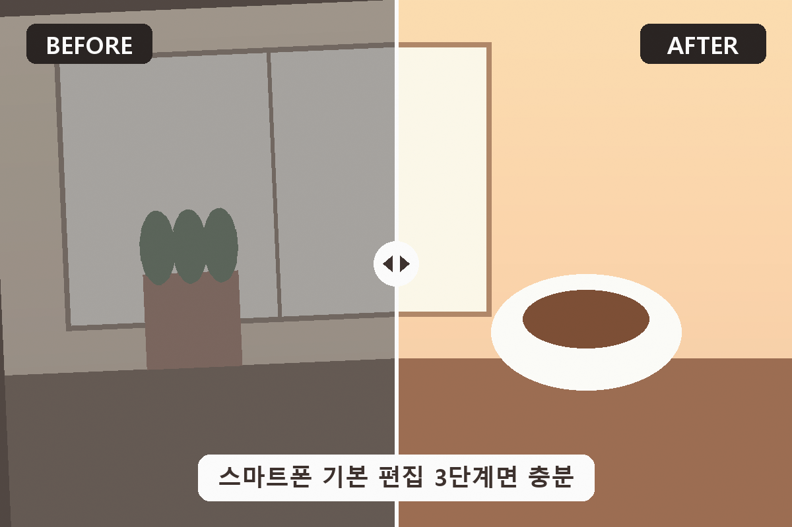
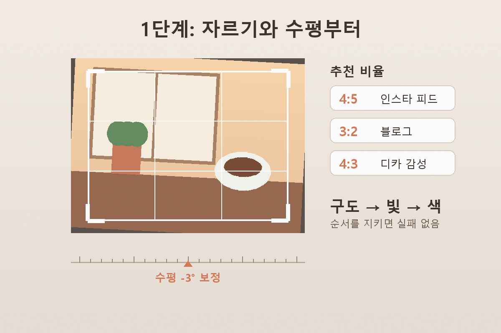
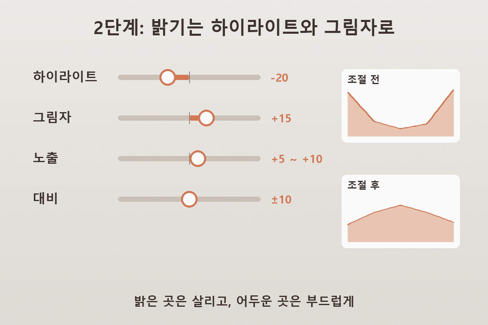
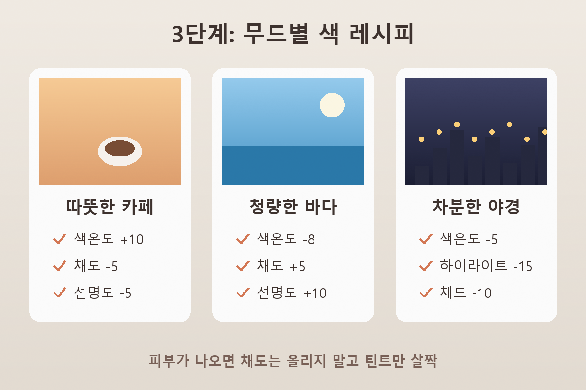

사진 보정 순서, 스마트폰 기본 편집만으로 감성 사진 만드는 3단계

요즘은 사진을 찍는 것만큼이나 '어떻게 보정하느냐'가 중요해졌죠. AI 자동 보정, 유료 필터 앱, 인플루언서 프리셋까지 선택지가 너무 많아서 오히려 막막하다는 분들도 많아요. 앱을 몇 개씩 깔아 봐도 사진마다 색이 들쭉날쭉하고, 필터를 씌우면 어딘가 인위적으로 보이고요. 혹시 이런 고민 해 보셨나요? "보정 잘하는 사람들은 대체 뭘 만지는 걸까?" 사실 비밀은 화려한 앱이 아니라 '순서'에 있어요. 스마트폰에 기본으로 들어 있는 사진 편집 기능만으로도, 정해진 순서대로 몇 가지 값만 조절하면 충분히 감성적인 사진을 만들 수 있답니다. 오늘은 누구나 바로 따라 할 수 있는 3단계 보정법을 알려드릴게요.
1. 1단계: 자르기와 수평부터, 색은 맨 나중에

보정을 시작하면 대부분 색감 필터부터 누르는데요, 순서를 바꾸는 것만으로 결과가 확 달라져요. 가장 먼저 할 일은 '자르기와 수평'입니다. 편집 화면의 자르기 메뉴에서 기울어진 수평선이나 건물 기둥을 먼저 반듯하게 맞춰 주세요. 수평이 1~2도만 틀어져도 사진 전체가 불안해 보이거든요. 다음으로 필요 없는 가장자리를 잘라 냅니다. 인스타그램 피드용이라면 4:5, 블로그용이라면 3:2나 4:3 비율이 안정적이에요. 이때 주인공이 너무 가운데 몰리지 않도록 3분할 격자를 참고하면 좋아요. 구도를 먼저 정리해 두면 화면에 남는 색이 달라지기 때문에, 이후의 밝기와 색 보정도 훨씬 자연스럽게 맞아떨어집니다. '구도 먼저, 빛 다음, 색은 마지막' 이 순서만 기억해 두세요.
2. 2단계: 밝기는 하이라이트와 그림자로 나눠서

두 번째는 밝기예요. 많은 분들이 '노출' 하나만 올렸다 내렸다 하는데, 그러면 밝은 하늘은 하얗게 날아가고 어두운 부분은 그대로 답답하게 남기 쉬워요. 그래서 밝기는 세 가지로 나눠 조절하는 게 요령입니다. 먼저 하이라이트를 -20 정도로 내려 하늘이나 창문처럼 밝은 부분의 디테일을 살려 주세요. 다음으로 그림자를 +15 안팎으로 올리면 얼굴이나 그늘진 부분이 부드럽게 밝아집니다. 마지막으로 전체 노출을 +5에서 +10 사이로 살짝만 맞추면 끝이에요. 대비는 사진 분위기에 따라 정하는데, 부드럽고 몽환적인 느낌을 원하면 -10, 또렷하고 선명한 느낌을 원하면 +10 정도가 적당해요. 밝기를 먼저 잡아 두면 색을 조금만 만져도 사진이 훨씬 깨끗해 보입니다.
3. 3단계: 무드별 색 레시피로 마무리

마지막이 색이에요. 상황에 맞는 '레시피'를 몇 개 정해 두면 매번 고민할 필요가 없어요. 카페나 실내 사진처럼 따뜻한 분위기를 원할 때는 색온도 +10, 채도 -5, 선명도 -5로 포근하게 만들어 보세요. 바다나 하늘 사진은 색온도 -8, 채도 +5, 선명도 +10으로 청량하고 시원한 느낌을 살릴 수 있어요. 야경은 색온도 -5, 하이라이트 -15, 채도 -10으로 차분하게 가라앉히면 빛 번짐이 더 예뻐 보입니다. 피부가 나오는 사진이라면 채도는 되도록 올리지 말고, 색조(틴트)를 살짝 마젠타 쪽으로 옮겨 혈색을 살려 주세요. 마음에 드는 값은 메모장에 레시피 이름과 함께 적어 두고, 비슷한 사진에 똑같이 적용하면 피드 전체의 색이 자연스럽게 통일돼요.
오늘 내용을 정리해 볼게요. 첫째, 자르기와 수평으로 구도를 먼저 정리하고, 둘째, 밝기는 하이라이트와 그림자로 나눠 맞추고, 셋째, 무드별 색 레시피로 마무리하기. 이 세 단계 순서만 지켜도 보정 시간이 줄어들고 결과는 훨씬 자연스러워집니다. 비싼 앱이나 복잡한 프로그램이 없어도 괜찮아요. 스마트폰 하나로도 감성 사진은 충분하다는 것, 보정에서도 마찬가지랍니다. 저희 지담 스튜디오도 촬영 후 보정은 늘 '덜어내는 것'부터 시작해요. 오늘 알려드린 순서로 보정한 사진이 있다면 보정 전후를 댓글로 보여 주세요. 직접 보고 한 줄 팁을 남겨 드릴게요. 다음 보정 레시피가 궁금하시다면 이웃추가도 잊지 마세요!